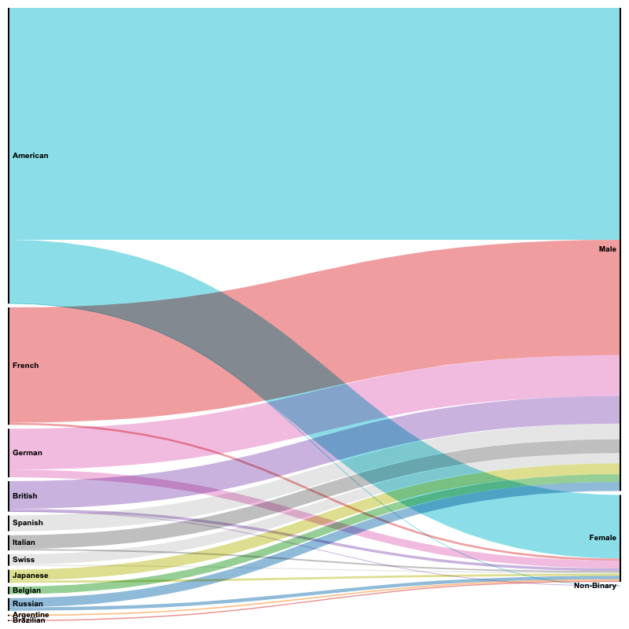

Gender
How is gender represented in MoMA’s collection? Are different genders equally represented? These questions get to the core of some issues which, while always relevant, have in recent years gained increased prominence.
As mentioned on the project homepage, one of the datasets made available by MoMA concentrates specifically on the artists whose works are part of the museum’s collection. However, because the issue it wants to explore is that of gender representation, while the following analysis could have made individual creators its metric, it instead considers items as metric; in other words, instead of counting creators only once, they are counted as many times as the number of objects they created which the museum possesses. The genders mentioned here are the ones that appear in the dataset.

The chart above outlines the current state of affairs as it pertains to the distribution of gender across the collection. The distribution is currently very much skewed toward one of the genders. The chart below complicates this picture further, by providing a summary of the cumulative distribution of gender representation in the collection over time.
It is apparent how the rate at which the acquisition of works of art created by artists who identify as male is disproportionately higher than that of any of the other two genders. It should also be noted how the female gender has experienced a rising trend in the past three decades. However, the acquisition of works of art created by artists who identify as non-binary has only started taking place in 2000.

The following animated chart showcases the gender ratio that has characterized acquisitions over time, by department. Naturally, the trend described above can be observed here also.

The alluvial diagram below shows the distribution of gender across the top ten nationalities represented in the collection. The cross-distribution of nationalities and non-binary gender is particularly interesting.

Overall, the analysis of the representation of gender within MoMA’s collection, while admittedly cursory, highlights some trends as well as distributions which appear to be consistent across the board.
There are, as mentioned tangentially above, a number of caveats that need to be expressed, and which may qualify what the data, and consequently the visualizations, express. In short, these data are inherently partial and largely inaccurate. Specifically, they only feature the three genders listed above; artists’ gender identity may have been assumed throughout the years; obvious issues related to inquiring about an individual’s gender identity for archival purposes, and the resulting inaccuracies deriving from such a process, should be considered; the right of individuals to not disclose such information also inevitably contributes to making these data inaccurate. These and many other issues should be considered when examining the distributions presented here.